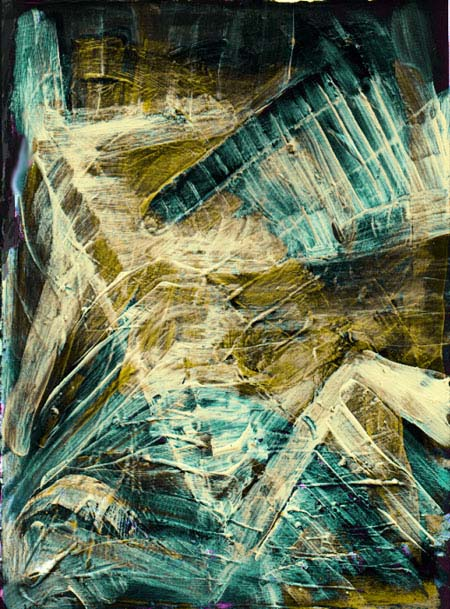

Oliver Gili
SCANNED ACRYLICS AND OILS
NOTES
Oliver Gili's art exists only in digital form, but he comes to it by a unique pathway, creating the art first by traditional means in acrylics and oils, then scanning the art into the computer where he then digitally adjusts it in Adobe Photoshop. It is then printed out on photographic film for exhibit. Gili tells us that he draws upon the techniques of post-impressionism, the artificial realities of computer game graphics and the intensity of stained glass. Gili, 27, lives in Brighton, England. "I am increasingly interested with the possibilities of taking art outside of the normal gallery environments," he writes. While showing at the Skylark Gallery, London, and elsewhere, he has exhibited widely, sometimes by projection of transparencies of his art, in pubs, bars and clubs in the Brighton area.Oliver Gili's email address: olivergili@bigfoot.com
Transient aspirations
|
 |